SDGs merupakan singkatan dari Sustainable Development Goals yang merupakan suatu perjanjian seluruh
negara di dunia mengenai sasaran-sasaran yang ingin dicapai dunia sebelum tahun 2030. Komitmen ini
disetujui negara-negara pada Sidang Umum Perserikatan Bangsa-Bangsa (PBB) pada tanggal 25 September
2015. Diterapkannya SDGs ini adalah untuk masa depan yang lebih baik dan berkelanjutan bagi dunia
ini.
Dalam beberapa tahun ke belakang, dunia banyak mengalami permasalahan. Baik itu permasalahan sosial,
ekonomi, dan lingkungan. Dengan adanya SDGs, diharapkan para negara yang terlibat benar-benar
berkomitmen untuk mencapai tujuan SDGs. Indonesia sangat terlibat dan aktif dalam program ini, dapat
dilihat dari website SDGs Indonesia yang sering memberi berita baru mengenai progress SDGs.
Masyarakat juga diharapkan untuk ikut peduli dan mendukung pencapaian tujuan-tujuan SDGs.
SDGs bukan hanya sekedar komitmen yang disetujui seluruh negara dunia secara semerta-merta. SDGs
benar-benar dilakukan secara serius. Buktinya, SDGs memiliki dokumen-dokumen penting yang mengatur.
Pedoman teknis ini diperlukan untuk memastikan bahwa semua orang memiliki pandangan atau persepsi
yang sama terhadap tujuan-tujuan SDGs. Berikut adalah pedoman-pedoman SDGs
- Metadata Global:
Di dalam buku ini, terdapat semua informasi mengenai sistem PBB dan organisasi internasional
lainnya. Metadata ini dapat diperbaharui lebih lanjut dan ditinjau secara berkala.
- Pedoman Tagging SDGs:
Merupakan buku pedoman penandaan anggaran tujuan SDGs. Hasil penandaan anggaran akan digunakan
sebagai bahan evaluasi dan pemantauan agar anggaran untuk mencapai tujuan SDGs dapat diukur
secara reguler. Hasil evaluasi dapat menjadi masukan dalam penyusunan kebijakan tahun
berikutnya.
- Pedoman E-Monev SDGs:
Sejak tahun 2019, Indonesia dibantu oleh Jepang untuk mengembangkan e-Monev SDGs. Suatu aplikasi
yang dapat digunakan seluruh pemangku kepentingan untuk melaporkan, memantau, dan mengevaluasi
perkembangan. Dengan aplikasi e-Monev, pemantauan dan evaluasi SDGs yang tinggal beberapa tahun
dapat diperkuat.
- Strategi Komunikasi SDGs:
Merupakan buku panduan komunikasi yang berisi sasaran pesan dan pesan utama SDGs Indonesia.
Dapat digunakan untuk menyampaikan informasi dan advokasi kepada semua pihak. Dilengkapi juga
cara penggunaaan logo SDGs dengan ketentuan yang telah disetujui PBB.
- Pedoman Monev SDGs - Edisi I:
Di dalam pedoman ini dibahas mengenai panduan alur mekanisme pemantauan dan evaluasi nasional
serta daerah. Dibutuhkan pedoman untuk pemantauan dan evaluasi karena merupakan tahapan yang
sangat penting untuk memastikan tercapainya tujuan SDGs. Jika tidak dipantau dan dievaluasi,
maka pemerintah dan masyarakat tidak akan tahu mengenai programnya dan tujuan bisa tidak
tercapai.
- Pedoman Monev SDGs - Edisi II:
Secara garis besar, isinya mirip seperti Edisi I, namun diberi beberapa tambahan pada urutan
penyajian formulir, matriks pemantauan dan evaluasi, dan status capaian indikator. Diberi
penambahan agar pedoman menjadi lebih jelas dan lengkap.
- Pedoman Penyusunan RAN SDGs - Edisi I:
Buku/pedoman ini disusun melalui proses diskusi dengan berbagai pihak seperti kementrian,
filantropi dan pelaku usaha, Organisasi Masyarakat Sipil dan Media, dan lain-lain. Pedoman ini
berisi kebijakan, rencana, dan mekanisme pembangunan nasional dengan tujuan SDGs. Dilengkapi
dengan sasaran, program, kegiatan, sumber daya pendukung, dan instansi pelaksana. Untuk
pengamatan lebih lanjut, dibuat tiga dokumen perencanaan yaitu Peta Jalan SDGs, Rencana Aksi
Nasional (RAN) SDGs, dan Rencana Aksi Daerah (RAD) SDGs.
- Pedoman Penyusunan RAN SDGs - Edisi II:
Pedoman ini dibuat setelah masuk tahun kelima setelah ditetapkannya 17 tujuan SDGs. Isi dari
pedoman ini sekiranya mirip dengan Pedoman Penyusunan RAN SDGs - Edisi I, hanya lebih baru dan
menyesuaikan keadaan dunia yang sekarang. Tentunya setelah berjalan lima tahun, pasti terjadi
perubahan dan peningkatan menuju 17 tujuan tersebut.
- Metadata Pilar Pembangunan Hukum dan Tata Kelola - Tahun 2024:
Dokumen Metadata Indikator SDGs Indonesia tahun 2024 yang pertama adalah Pilar Pembangunan Hukum
dan Tata Kelola yang mencakup tujuan SDGs 16 (Peace, Justice, and Strong Institutions).
- Metadata Pilar Pembangunan Lingkungan - Tahun 2024:
Dokumen Metadata Indikator SDGs Indonesia tahun 2024 yang kedua adalah Pilar Pembangunan
Lingkungan yang mencakup tujuan SDGs 6 (Clean Water and Sanitation), 11 (Sustainable Cities and
Communities), 12 (Responsible Consumption and Production), 13 (Climate Action), 14 (Life Below
Water), dan 15 (Life on Land).
- Metadata Pilar Pembangunan Ekonomi - Tahun 2024:
Dokumen Metadata Indikator SDGs Indonesia tahun 2024 yang ketiga adalah Pilar Pembangunan
Ekonomi yang mencakup tujuan SDGs 7 (Affordable and Clean Energy), 8 (Decent Work and Economic
Growth), 9 (Industry, Innovation, and Infrastructure), 10 (Reduced Inequalities), dan 17
(Partnerships for the Goals).
- Metadata Pilar Pembangunan Sosial - Tahun 2024:
Dokumen Metadata Indikator SDGs Indonesia tahun 2024 yang terakhir adalah Pilar Pembangunan
Sosial yang mencakup tujuan SDGs 1 (No Poverty), 2 (Zero Hunger), 3 (Good Health and
Well-Being), 4 (Quality Education), dan 5 (Gender Equality).
Pedoman-pedoman tersebut diharapkan dapat mempermudah kerja pihak-pihak yang terlibat dalam
pencapaian tujuan SDGs. Semua informasi mengenai SDGs dapat dilihat lengkap dari website SDGs.
Program ini merupakan program inklusif yang sering memberitakan progress terbarunya, sehingga
masyarakat bisa mendapatkan informasi terbaru. Selain pedoman yang telah disebutkan, ada juga
regulasi yang mengatur berjalannya SDGs di Indonesia, yaitu:
- Perpres No 59/2017,
- Perpres No 111/2022,
- Lamp. 2 - Permen No 7/2018,
- Permen No 7/2018,
- Anak Lamp. 1 - Permen No 7/2018,
- Anak Lamp. 2 - Permen No 7/2018,
- Anak Lamp. 3 - Permen No 7/2018 - Matriks Pilar Pembangunan Lingkungan,
- Anak Lamp. 4 - Permen No 7/2018 - Matriks Pilar Pembangunan Hukum dan Tata Kelola,
- Kepmen No. 124/M.PPN/HK/09/2023,
- Kepmen No. 127/M.PPHN/HK/11/2018,
- Kepmen No. 37/M.PPHN/HK/05/2021,
- RPJMN 2020-2024,
- RKP 2021,
- RKP 2022,
- RKP 2023,
- Kemendagri,
- dan Kementrian Desa PDTT.


 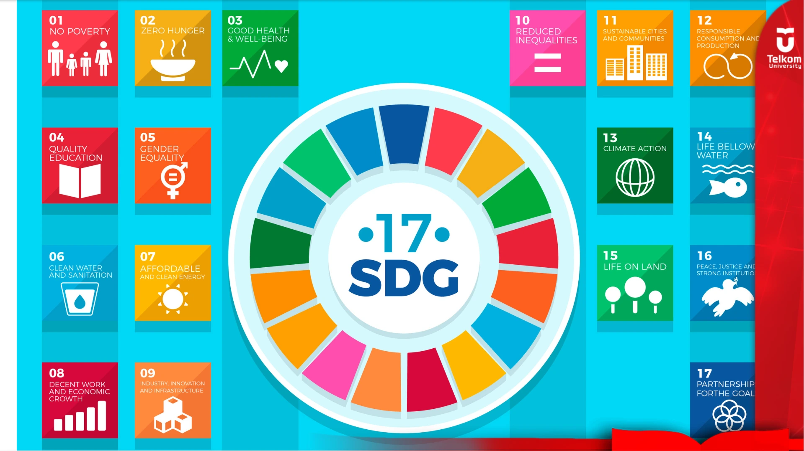
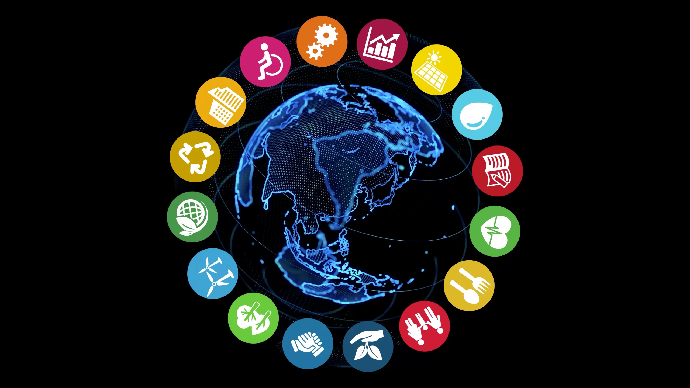
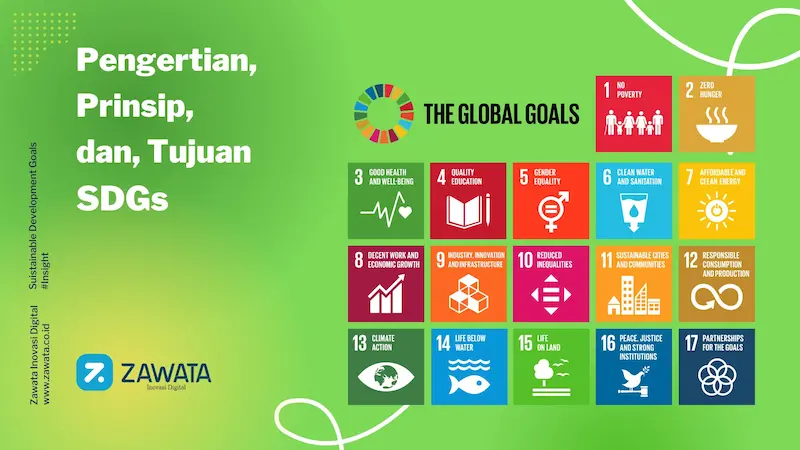
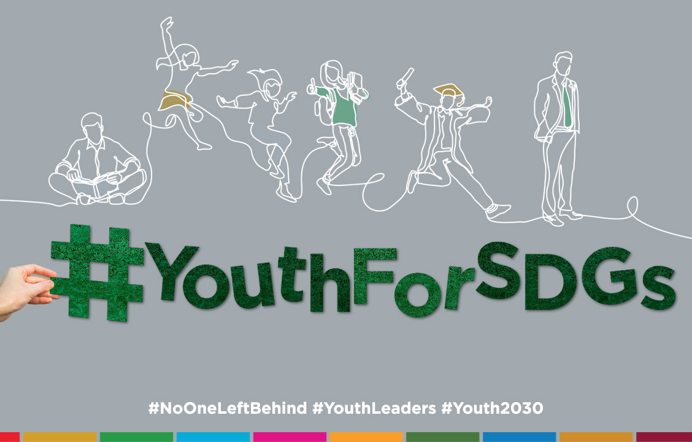
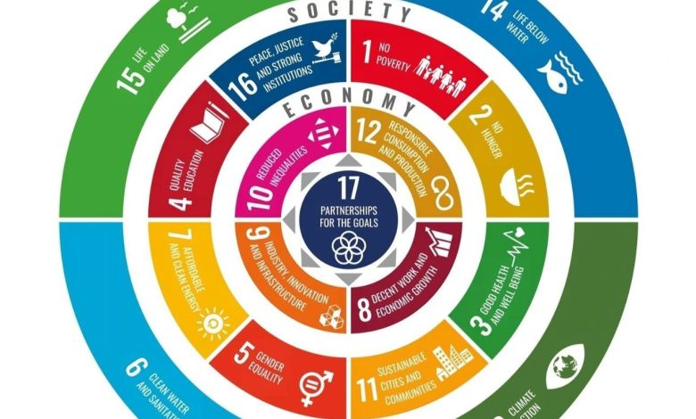
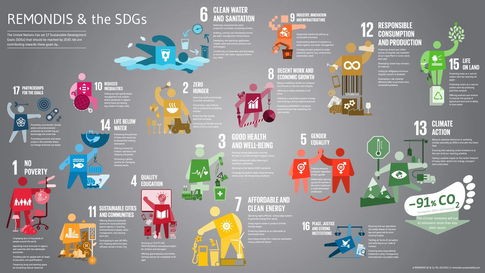
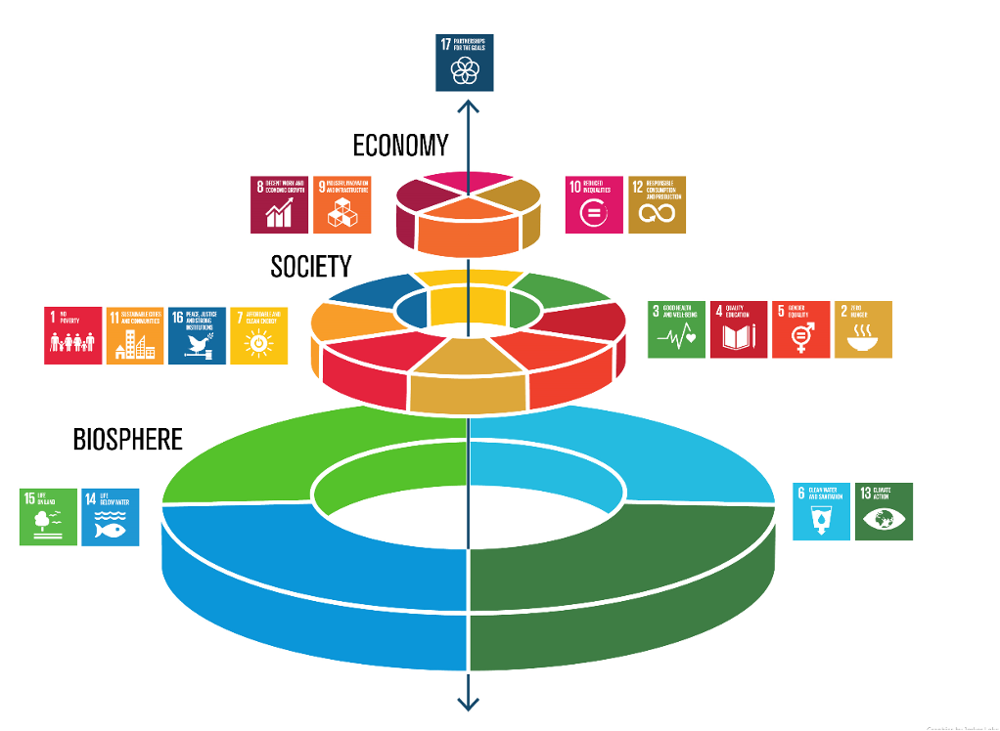
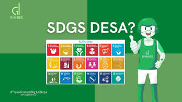
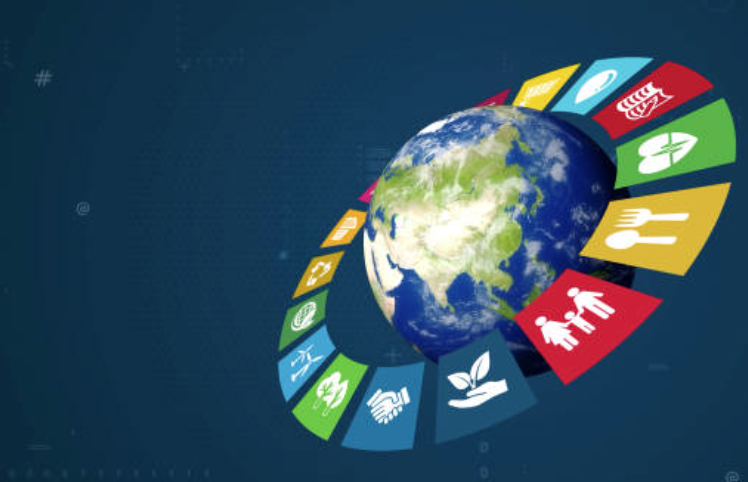
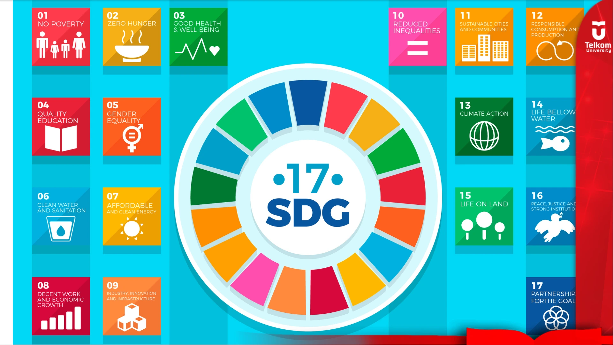
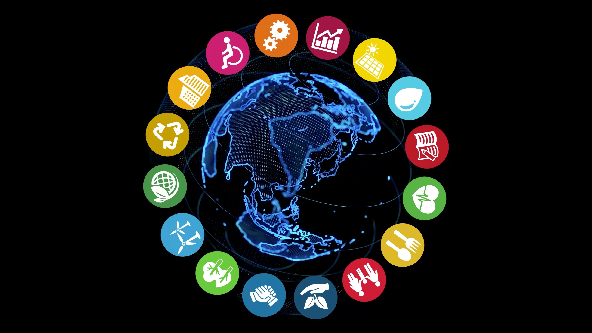
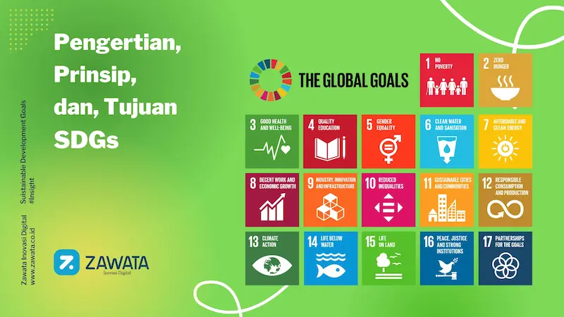
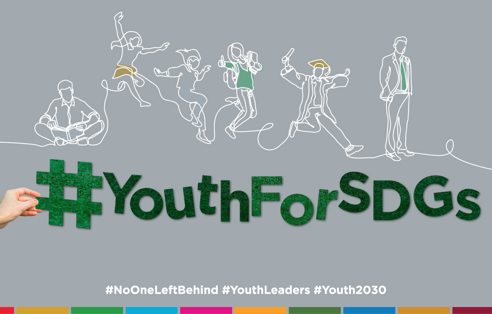
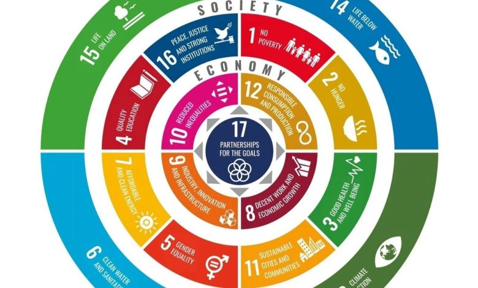
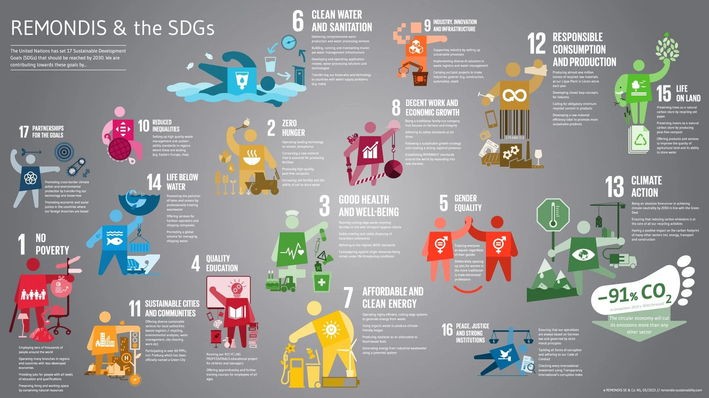
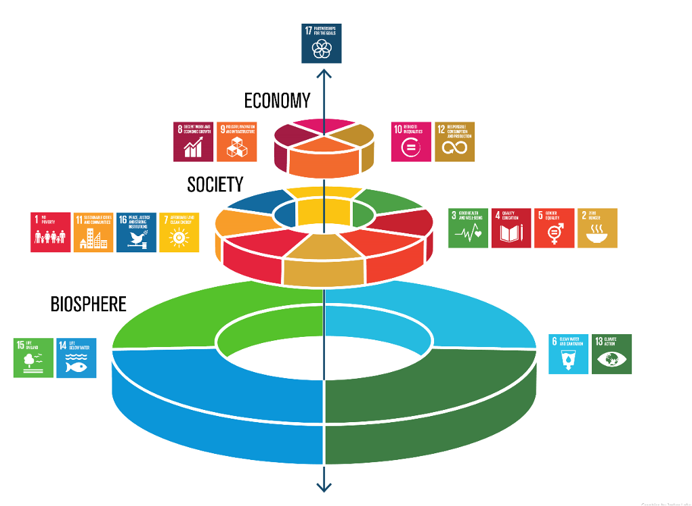
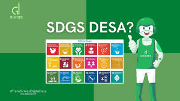
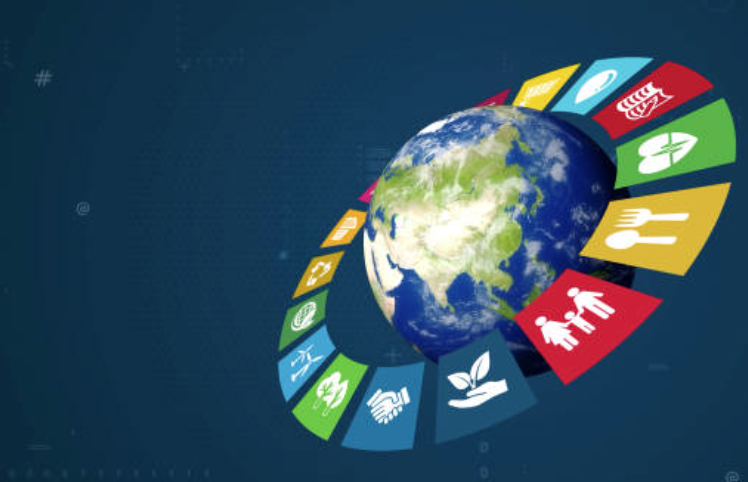